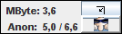
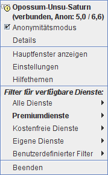

Anonym-O-Meter Inhalt
Anonym-O-Meter Inhalt  Bedienung Kontextmenü
Bedienung Kontextmenü
Anonym-O-Meter Inhalt Bedienung Kontextmenü

Das Minifenster von JonDo ist eine minimalistische Ausgabe des
Hauptfensters. Sie können es durch einen Klick auf  oder durch einen
Doppelklick in das Hauptfenster aufrufen. Dieses Fenster zeigt nur die
wichtigsten Informationen an und besteht aus folgenden Elementen:
oder durch einen
Doppelklick in das Hauptfenster aufrufen. Dieses Fenster zeigt nur die
wichtigsten Informationen an und besteht aus folgenden Elementen:
 Knopf, der zur
normalen Darstellung von JonDo umschaltet (geht auch mit einem Doppelklick
in das Fenster).
Knopf, der zur
normalen Darstellung von JonDo umschaltet (geht auch mit einem Doppelklick
in das Fenster).Sie können über das Kontextmenü von JonDo immer schnell auf die wichtigsten Funktionen zugreifen. Das Kontextmenü ist durch einen Klick mit der rechten Maustauste auf das Hauptfenster, die Mini-Ansicht oder das Icon in der Windows-Schaltfläche erreichbar.
